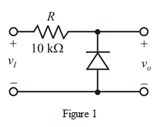
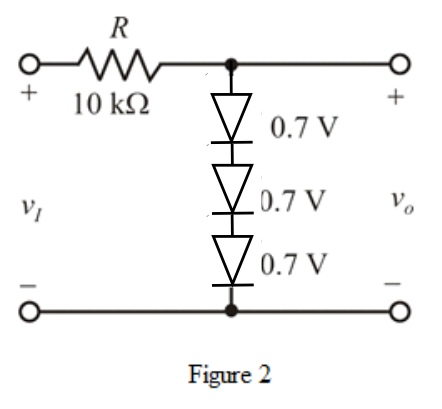
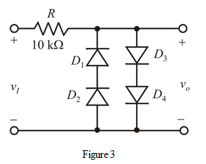

Step 1:
(a)
Consider the diode voltage drop in conduction as,
Draw the following limiter circuit with the input signal in above range.

Step 2:
From Figure 1 observe that the input voltage is below range, the diode in cut-off state. Thus, the output follows the input. When the input crosses then the diode is in conduction mode. Thus, the output is  .
.
Write the expression of output voltage.
Therefore, the required limiter circuit is shown in Figure 1.
Step 3:
(b)
Consider the diode voltage drop in conduction as
Draw the following limiter circuit with the input signal limited to above range. Connect the three diodes in series.

Step 4:
For the input voltage below range, the diodes are in cut-off state. Thus, the output follows the input. When the input crosses  , the diodes are in conduction mode. Thus, the output is .
, the diodes are in conduction mode. Thus, the output is .
Write the expression for the output voltage.
Therefore, the required limiter circuit is shown in Figure 2.
Step 5:
(c)
Consider the diode voltage drop in conduction as 
For the required limiter circuit, the signal should be limited to above range.
For limiting to  , connect two diodes in series in forward direction to the input.
, connect two diodes in series in forward direction to the input.
For limiting to , connect two diodes in series in reverse direction to the input.
Draw the following circuit diagram:

Step 6:
If the input is greater than  , the diodes and are in conduction. Thus, the output is .
, the diodes and are in conduction. Thus, the output is .
If the input is less than, the diodes and are in conduction. Thus, the output is  .
.
If the input is in between  and
and then all the diodes are in cutoff region. Thus, the output follows the input.
then all the diodes are in cutoff region. Thus, the output follows the input.
Write the expression for the output voltage.
Therefore, the required limiter circuit is drawn.